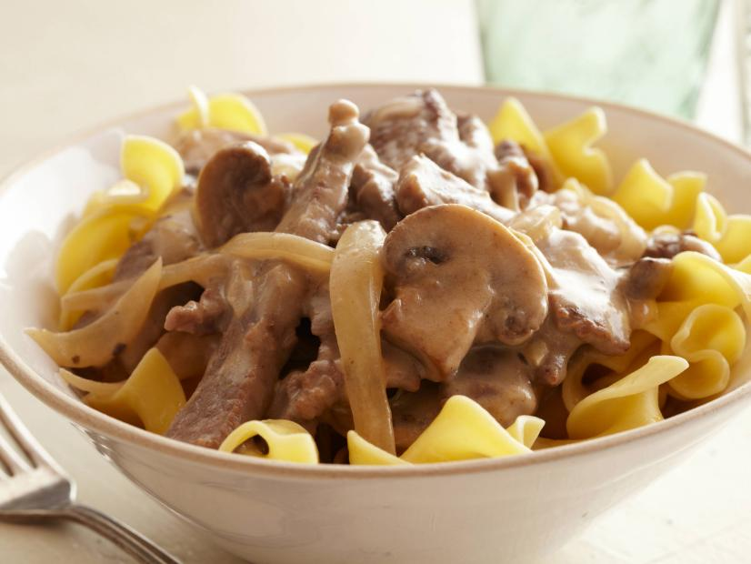
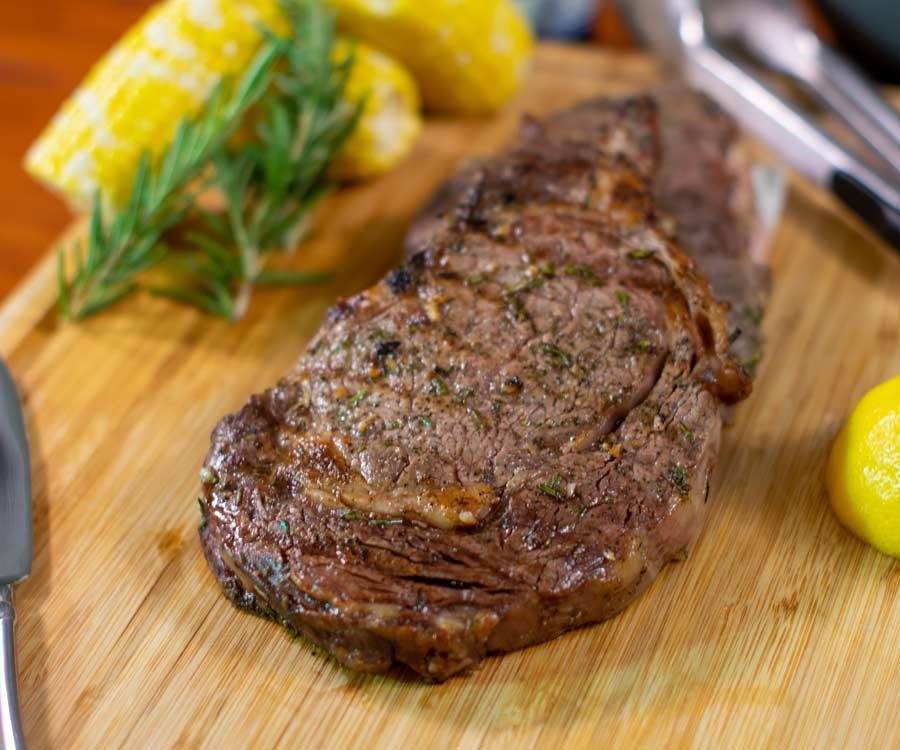

- 1 1/2 pounds cubed round steak, cut into thin strips
- All-purpose flour
- 2 tablespoons olive oil
- 2 tablespoons butter
- 1 medium onion, sliced
- 8 ounces fresh mushrooms, sliced
- 1 (10 3/4-ounce) can beef broth
- 1 (10 3/4-ounce) can cream of mushroom soup
- Salt and black pepper
- 1 cup sour cream
- Cooked egg noodles
House Seasoning:
- 1 cup salt
- 1/4 cup black pepper
- 1/4 cup garlic powder

- 1 (16-ounce) Certified Angus Beef ® ribeye steak
- LE CREUSET cast iron signature skillet
- 1 teaspoon peanut or canola oil
- 1/2 teaspoon coarse kosher salt
- 1/4 teaspoon freshly cracked black pepper
- 3-4 thyme sprigs
- 2 garlic cloves, partially crushed
- 2 tablespoons butter